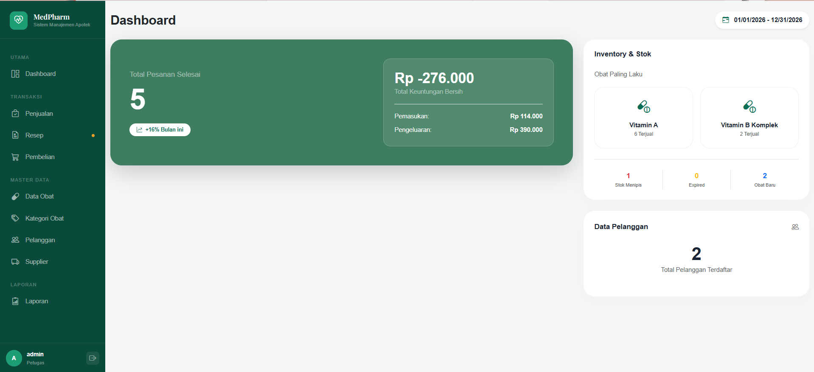

Web Application apotek.png
Peran: Lead Database & Backend Developer
Sistem Manajemen Apotek (Pharmacy Management System)
Sistem informasi kasir, manajemen stok obat, monitoring masa kedaluwarsa otomatis, resep dokter, dan laporan transaksi apotek berbasis web.
- Point of Sale (POS) & Notifikasi Stok Kritis
- Arsitektur Basis Data Relasional Apotek Terstruktur
- Pengelolaan Multi-Role: Admin dan Kasir/Apoteker